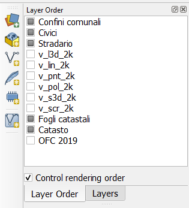
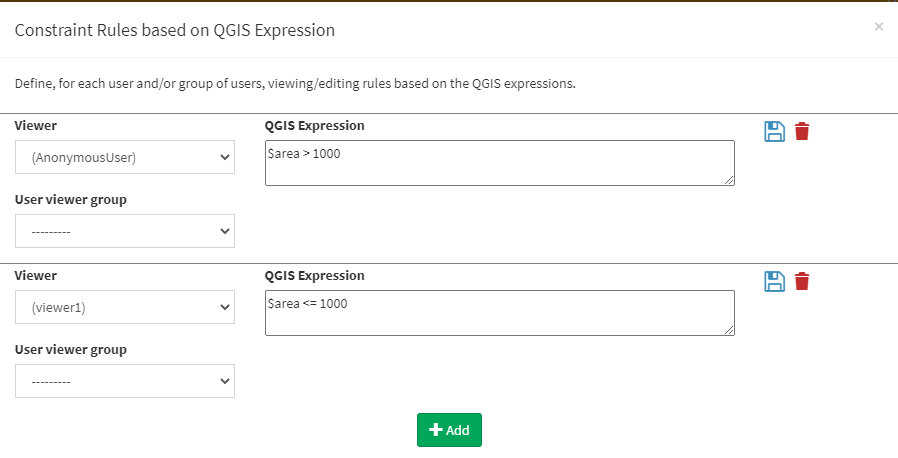
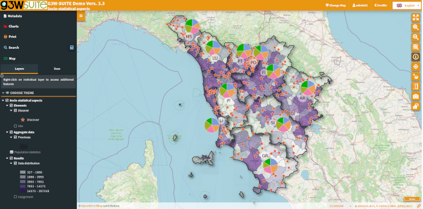
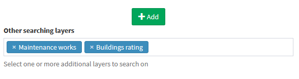
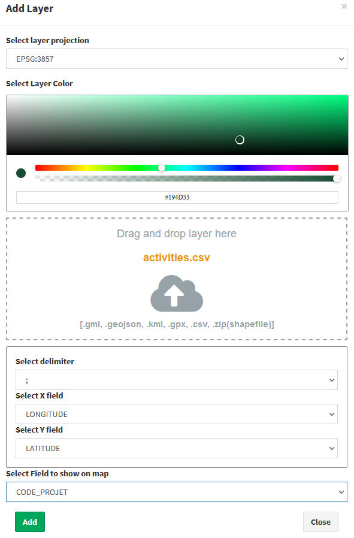
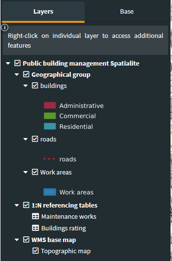
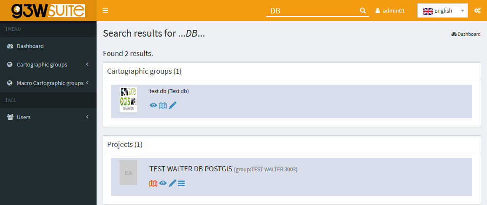

Changelog G3W-Suite 3.3
Release date: 07 October 2021
Changelog for G3W-SUITE 3.3
G3W-SUITE 3.3 offers an extensive list of new and improved features – the most important shown here.
In particular, the new release implements:
- ability to define single editing powers (create, modify, delete) on individual layers for each user
- QGIS expression management at the level of online editing, for the automated calculation of the values to be associated with the individual fields
- Oracle Spatial editing support
- new constraints, based on users, on layer and attribute tables visibility
- further integration of the QGIS API
To date, the modules/functions are managed through the API are:
- project import
- editing
- OWS server (WMS, WFS and WCS)
- searches (optional, standard through WMS service)
- altas print layout
- editing and visualization constraints
- vector layer API (table view)
We hope you enjoy this great work!
Happy mapping!
Sponsor and funder
G3W-SUITE is an open source project and if you are able to, consider supporting our work through donations or contributions to the code documentation, web site and so on. Among the main funder of this version we remember:


General
Feature: Layer order
Setting inherited from the QGIS project
The definition on the QGIS project of the order of the layers in the map, independent of the order of the layers in the TOC, is now managed.

Feature: 1:N relation based on multi fields
Setting inherited from the QGIS project
The ability to create relations based on more than one field is now managed but limited to the data consultation aspects (no searches and no editing)

Filters and constraints
Feature: Hide layers by user single/group
It is possible to hide specific layers from the TOC based on specific users or groups of users
Feature: All filters extended to the anonymous user
It is possible to base the various filters also on the anonymous user (public maps):
- hide layer
- geo-constraints (visualization and editing)
- alphanumeric constraints based on SLQ and QGIS expressions (visualization and editing)

Feature: Filters on empity layers
It is possible to hide, automatically, layers from the TOC when they have no records.
Useful when using filters on layers or geographic views.

Feature: Hide attributes table
Now you can hide attributes table for specific layers.
Search tool
Feature: Search on 1:N relation data
It is now possible to carry out a search based on a related table 1:N (child) and obtain the associated parent geometries as a result.
It works only on 1:N relation based on one field
Feature:�Multi-layer searches
It is possible to create searches based on multiple layers with homologous fields.
The results will be differentiated according to the corresponding layer.
Especially useful in the case of multigeometric layers.

Data providers
Feature: More data type support
Reading/editing support on Oracle Spatial DB is extended
�
Cartographic Client
Feature: QGIS themes management
Setting inherited from the QGIS project
Through a drop-down menu it is possible to view the different combinations of layers (switched on and off) based on themes defined in the QGIS project.
Feature: Add layer tool implementation
The Add layer tool now support:
- GML
- GeoJson
- KML
- GPX
- SHP
- CSV (with X/Y coordinates)
It is also possible to define a field in the imported file to be used for labels,

Feature: Add GeoTIFF export tool
The tools permits to export canvas area as GeoTIFF.
Feature:�Legend position
An option, at the publication level of the QGIS project, allows to set legend rendering position:
- TAB (default value, legend is rendered into a separate tab)
- TOC (legend is rendered inside layers toc)

Feature: Manually defining the content of a search results
Following a query (single, by bbox or by polygon) or a search, it is possible to manually add/remove feaures from the list of results.
This allows you to define more precisely the list of contents to be exported in various formats or to be used as a basis for filters on tables and charts.
Feature: Additional download information
It is now possible to associate (at the download level) the information related to the search polygon to the geometries resulting from a QueryByPoligon
Feature: Creation of links for direct zoom to individual features
After querying a layer it is possible to copy, for each resulting features, a link dedicated to the direct zoom to the object.
Editing
Feature: Differentiation of user-based editing powers
Ability to define editing powers on individual layers for each user (single / group):
- create
- modify geometry
- modify attribute
- delete
Feature: QGIS expressions management
Setting inherited from the QGIS project
Now the editing form manage the QGIS expressions used as default values for individual fields in the QGIS project.
Very useful in all cases where we want the values of a field to be calculated automatically through the potential of QGIS expressions.
Minor improvements
Feature: More language support
Map client and administration panel are available in additional languages:
- French
Feature: Search system for project and cartographic groups
In the administration session, a search tool will allow you to find projects and cartographic groups without having to manually consult all the contents.

For complete details, see the official ReadTheDocs documentation.